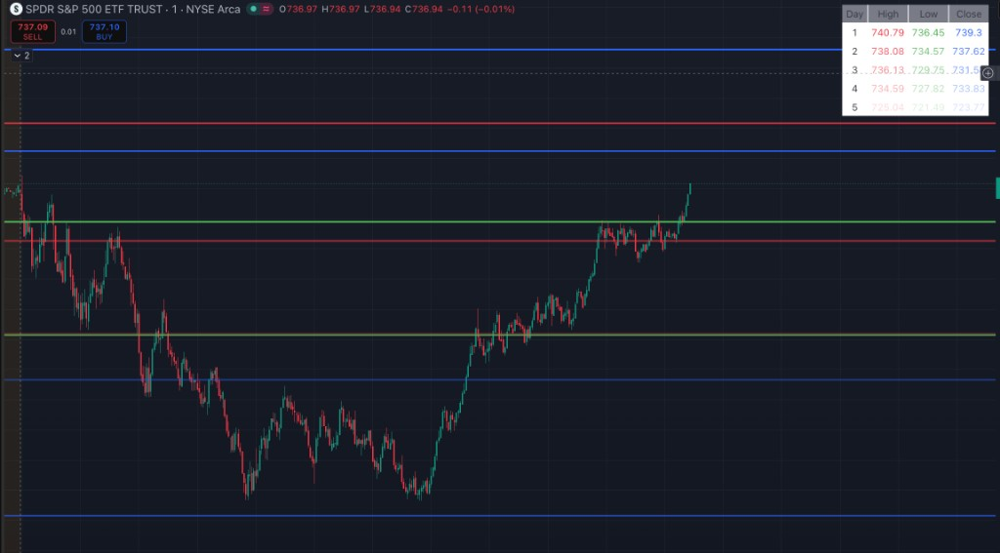

Overview
→Built a custom Support & Resistance Band indicator in Pine Script, deployed and accessible on TradingView for any trader to use.
→The indicator uses the previous day's high, low, and close to draw horizontal price bands — key levels where market behavior is historically predictable.
→This same indicator is used as one of the three signals in the Options Trading Bot — the S&R Bands tell the bot where price is likely to bounce or break.
How the Bands Are Calculated
Previous High
The highest price reached during the prior trading session. Acts as a key resistance level — price often struggles to break above it on re-test.
Previous Low
The lowest price of the prior session. Functions as a support floor — a level where buyers historically step in to defend price.
Previous Close
Where the prior session ended. A psychologically significant level — institutions and algorithms often respond to price crossing this mark.
Pine Script Logic — Prior Session Values
prev_high = request.security(syminfo.tickerid, "D", high[1])prev_low = request.security(syminfo.tickerid, "D", low[1])
prev_close = request.security(syminfo.tickerid, "D", close[1])
plot(prev_high, "Prev High", color.new(#D4A843, 0), 1)
plot(prev_low, "Prev Low", color.new(#6BBF8A, 0), 1)
plot(prev_close, "Prev Close", color.new(#8BA8A0, 0), 1)
Live Chart — SPY with S&R Bands

SPY (SPDR S&P 500 ETF) on a 1-minute chart with the S&R Band indicator active. The blue bands mark prior session highs, the green band marks the prior close, and the red band marks prior support. Price repeatedly interacts with each level throughout the session.
Why These Levels Matter
→Institutional memory: Large funds set limit orders around prior-session levels — meaning there's predictable buying/selling pressure at these exact prices.
→Self-fulfilling price action: Because many traders watch these same levels, they become reliable. The more people act on a level, the more meaningful it becomes.
→Objective and repeatable: Unlike hand-drawn support/resistance, these bands recalculate automatically — no subjectivity, no redrawing.
→Bot integration: The Options Trading Bot uses these bands as one of its three required signals — an entry only fires when price is at or near a band AND the other two indicators confirm.
Connection to the Trading Bot
Part of a Larger System
This indicator was built specifically to power the S&R Band component of the Options Trading Bot. The bot requires all three indicators to align simultaneously — RSI, Fair Value Gaps, and these S&R Bands — before executing a trade. The bands define the "where"; the other signals define the "when". See: Options Trading Bot →
Tech Stack
Pine Script v5
TradingView
Prior Session Data
Technical Analysis
Support & Resistance